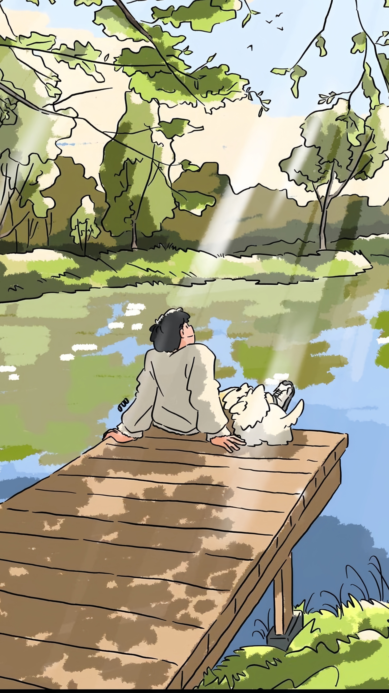

Naimbag nga aldaw mo, sapay kuma ta masarakan naka a nasayaat daytoy a mensahe. Nabayagen nga adda kayatko nga ibaga kanyam, ngem kanayon a marigatanak a mangiyebkas iti marikriknak. Gapuna, kas maysa nga IT sutdent inaramid ko daytuy nga program tapno maibagak to marikriknak. Kitaem, nabayagen a dinayawka manipud iti adayo, ket kayatko laeng nga ipakaammo kenka no kasano ti panangapresiarko iti kaaddam iti biagko. Maysaka a pudno a pagsidsiddaawak, saan laeng a gapu iti makinruar a kinapintasmo, no di ket gapu iti tao nga addaka iti uneg.
Ammok a diak nairuam a mangiyebkas iti sipapanayag ti marikriknak, ket ti panagbuteng iti pannakailaksid ti kanayon a mangtengtengngel kaniak. Ngem naamiriskon a ti panangtaginayon kadagitoy a rikna iti bagik ket mangnayon laeng iti dagsen kadagiti abagak. Isu nga adtoyak, agluksawak iti pammati ken mangipudno nga adda riknak kenka.
Kayat ko lang nga ipakaammo nga awan ti namnamaek a kasukatna. Kayatko laeng a maammuam ti riknak, uray no mabalin nga awan ti balbaliwanna iti nagbaetanta. Ti panaggayyemmo kaipapananna ti lubong kaniak, ket no agtalinaed dagiti bambanag a kas iti kasasaadda, agyamanak ta addaka laeng iti biagko.
Pagyamanan iti panagbalinmo nga inspirasion ken positibidad iti biagko, uray no manipud iti adayo. Agan annadka ken sapay la kuma ta nasayaat ti aldaw mo.
❤️